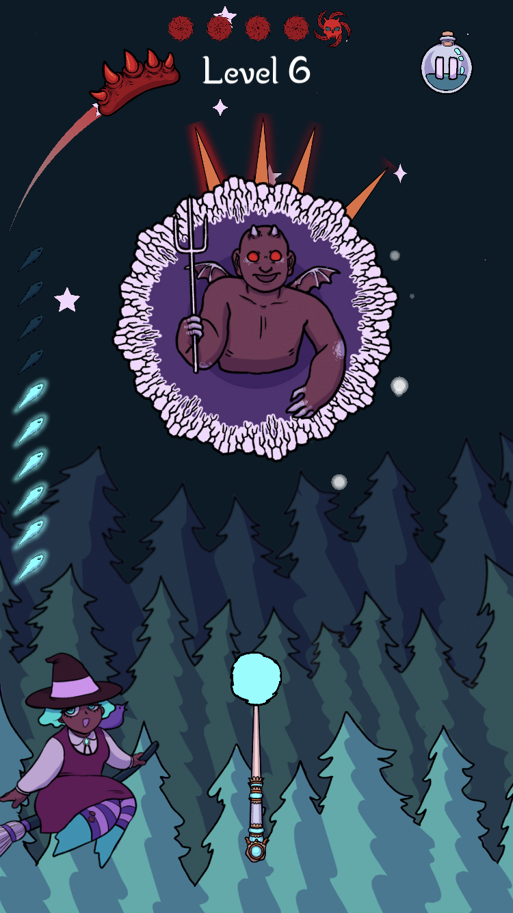
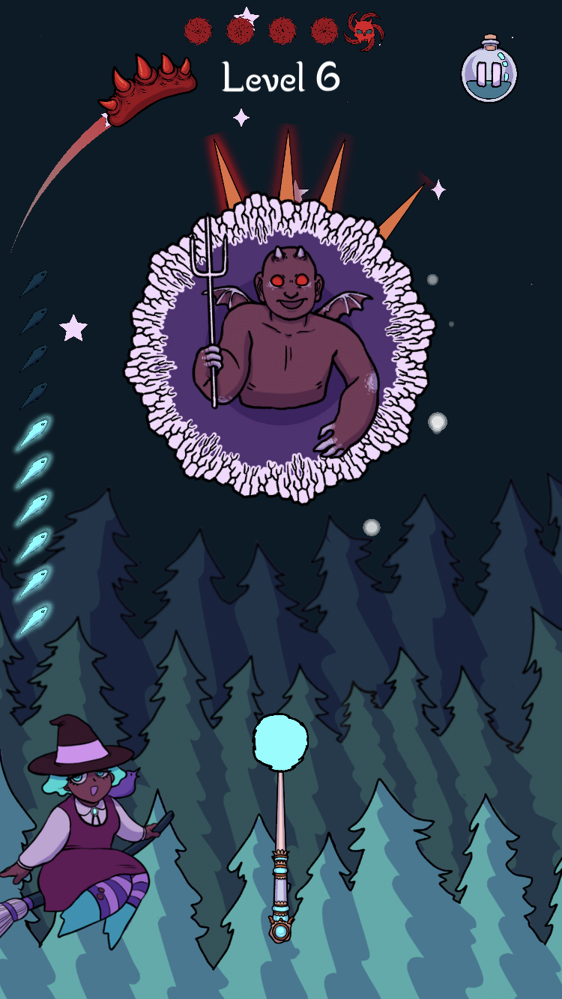

Spell Strike
In Development
Genre: Arcade
Created by: MassDiGI
Role: Lead Programmer
Engine: Unity
Team Size: 6
All Persephone wanted was to summon a friend, but instead she accidentally summoned a horde of demons! Shoot magic bolts into the demonic portals to close them and help her save the town. Don’t hit the portal in the same spot twice and be mindful of demon sabotage!
I worked on Spell Strike as Lead Programmer in Spring 2018. At the beginning we brainstormed mechanics, and then implemented them into a separate version of the game. Our team collected data on these mechanics, and I fully completed the one that got the highest rating among players for how fun it was, and how easy it was to understand. I also helped on balancing levels, which involved getting data from people on which levels they felt might be too difficult.

 
